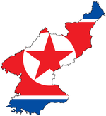

De: La Frikipedia, la enciclopedia extremadamente seria.
De: La Frikipedia, la enciclopedia extremadamente seria. De: La Frikipedia, la enciclopedia extremadamente seria.
Para su enemigo a muerte vecino del sur, véase Corea del Sur.
| De la serie Países del planeta tierra: | |||||
| 조선민주주의인민공화국 Chosŏn Minjujuŭi Inmin Konghwaguk Lepública Democlática Populal de Colea | |||||
|---|---|---|---|---|---|
| |||||
| Lema: No podel hacel nada glingo mugloso, nosotlos tenel bombas atómicas. | |||||
| Himno: 아침은 빛나라 이 강산 은금에 자원도 가득한 삼천리 아름다운 내 조국 반만년 오랜 력사에 찬란한 문화로 자라난 슬기론 인민의 이 영광 몸과 맘 다 바쳐 이 조선 길이 받드세 백두산 기상을 다 안고 근로의 정신은 깃들어 진리로 뭉쳐진 억센 뜻 온 세계 앞서 나가리 솟는 힘 노도도 내밀어 인민의 뜻으로 선 나라 한없이 부강하는 이 조선 길이 빛내세
| |||||
| 
| |||||
| Capital | Pyongyang | ||||
| Mayor ciudad | Pyongyang (casi que es la única ciudad que tienen ¬¬) | ||||
| Lenguas oficiales | Coleano del Nolte, Chino y Klingon (el Japonés está prohibido) | ||||
| Gobierno | Democracia Nuclear | ||||
| Empeladol | Kim Jong-Il | ||||
| Área | Asia allá | ||||
| Población | 24.000.000 de coreanos, 400 chinitos, algunos nippones y emm mas chinitos por ahi (sin contar los disidentes capitalistas presos en las correccionales) | ||||
| Moneda | | ||||
| Zona horaria | GTM ++ secreta | ||||
| Dominio Internet | coreadelnorte@misil.com.kp | ||||
| Código telefónico | 공산주의
| ||||
| ¡Destluilemos a los glingos capitalistas en 2016! | |||||
«Está al norte de Corea del Sur»
~ N00b demostrando que merece morir.
«북한은 레프 트로츠키 경우, 정말 공산하지 않습니다»
~ Norcoreano diciendo groserías.
La República Democrática Popular de Corea mas conocida por los occidentales como Corea del Norte es un pequeño reino socialista ubicado en el norte de la península de Corea (¡¡no lo puedo creer!!) y es famoso por ser el único país socialista que no le ha entregado el culo a los gringos, y por eso al no venderse como prostituta para que los yonkis de américa la dominen con su capitalismo y economía de mercado, entonces aún hasta la actualidad sigue conservando un sistema pseudomarxista y por eso el Tío Sam y sus lameculos lo consideran el nuevo "Eje del Mal". Además éste pintoresco paisucho de morondanga cuenta con la mas avanzadísima forma de democracia conocida por el hombre, que consiste en que el Presidente elija a su hijo como sucesor, y así tenemos que Norcorea es la primer y única dinastía comunista del mundo entero, como para no tener que perder el tiempo escrutando votos y esas cosas, ya que ellos se dedican mas al entrenamiento militar anti-yanqui y por eso no malgastan su tiempo alternando representantes en el poder y esas idioteces sin sentido que hacemos los occidentales.
Inicialmente ignorada por las invasiones etarra-vasconas del siglo V, la región de las Coreas fue poblada por un grupo de comerciantes core-fascismo-Hirohito y a fabricar millones de placas de acetato para las películas de anime de Japón, que hasta entonces no se hacían con métodos digitales porque Sony mas bien ni existía en aquel entonces.
Así los coreanos eran esclavizados por los ponjas hasta que un coreanito de esos conocido como Kim Il-Sung (especie de Sam Webb.
El tal Kim Il-Sung hizo la revolución neomarxista y proletaria para hechar a los ponjas a la mierda, pero persistió el problema de que tras la victoria de los "aliados" en la Segunda Guerra ahora los vencedores se disputaban el terreno del ex-imperio japonés, y así los yankis y rusos quisieron quedarse con la península. Kim Il-Sung sobornó a los soviéticos con putas norcoreanas una alianza estratégica comunista pero obviamente no podía hacer lo mismo con los gringos y por eso ahora tenía que expulsar también a los yanquis. Solo pudo expulsarlos del lado norte de la península, quedando todos los yankis del lado sur. Esto provocó la división del pueblo en 2: Corea del Norte y Corea del Sur, siendo el sur capitalista y el norte comunista, socialista, maoísta, ateísta, taoísta, chondoísta, budista, y separatista.
Para simplificar todo eso que eran el Presidente Kim Il-Sung le dio un nuevo nombre a la filosofía política del país: JUCHE (Jodida Unión de Coreanos Huevones y Estalinistas), pero obviamente había algunos que no querían que Norcorea decidiera libremente cual sistema político iban a implementar...
...Los gringos hicieron todo lo posible para penetrar a tu hermana en Corea del Norte y colonizar el país con su sistema capitalista... hasta sobornaron a la URSS para que tumbaran el muro de Berlín y se hicieran neoliberales, y últimamente también empezaron a corromper a China para que también le entregue el culo al capitalismo y así aislar a Norcorea para que se rindan ante Washington, pero los norcoreanos no se rindieron y lograron hacer prosperar su economía socialista en base a la producción de armamento pesado (que conforma el 50% del PBI) y un sinfín de afiches y cartelitos propagandísticos coloridos llenos de mensajes subliminales a favor de la ideología Juche (y ese es el otro 50% restante de su PBI).
Por eso los gringos boicotearon a Norcorea con un bloqueo económico que les impide el comercio exterior para que no consigan Uranio 238, pero en realidad el bloqueo les prohíbe todo, hasta la compra y venta de condones, y también estos yonkis norteamericanos junto con sus títeres surcoreanos empezaron a "practicar tiro" lanzando misiles contra las montañas ubicadas en el límite entre las dos Coreas, y también gustan de mostrar músculo enviando portaaviones para intimidar al actual líder Kim Jong-Il, que por extraño que parezca le tocó ser presidente justo siendo hijo del anterior presidente y Padre de la Patria Kim Il-Sung que se mencionó antes (casualidades de la vida).
Posteriores intervenciones militares han motivado la creación de una valla de tres metros de largo por medio de altura entre el límite de las dos Coreas, en una Zona Desmilitarizada similar a la Franja de Gaza pero sin soldados bombardeando cada dos minutos (pos por eso le dicen Zona Desmilitarizada ¬¬, que si la bombardearan como a Gaza entonces no estaría desmilitarizada ¬¬). Esta región especial no cuenta con ninguno de los dos ejércitos y por eso sirve para el tráfico de Harvey Levin, que también interrumpe la programación del Warner Channel y no te deja ver The Big Bang Theory) y por su ausencia tanto de personal militar como civil ha servido de refugio para la vida silvestre volviéndose una suerte de reserva natural con especimes únicos, dando orígenes a muchos pokémons que convirtieron la zona en una suerte de Región de Kanto pero en versión comunista.
No obstante hay un único puesto de vigilancia en la DMZ donde se permite la presencia militar para custodiar el paso fronterizo, y ese está ubicado en la pequeña ciudad de Panmunjom, donde el puesto de vigilancia se divide a la mitad por el Paralelo 38 y del lado norte quedan los milicianos rojos y del lado sur los milicianos fachos, mirándose fijamente a los ojos mutuamente esperando el momento exacto en el que el otro se distraiga y en esa sacan el arma y abren fuego para invadir la respectiva nación vecina. Hasta el momento ninguna de las dos Coreas ha tenido éxito en hacer ésto de aprovechar el descuido del otro para invadirlos en un parpadeo, y por eso en los últimos años el gran ingenio norcoreano ha conseguido fabricar el arma final contra los cerdos capitalistas imperialistas y dinosaurios conservadores de la ultraderecha ya que al acabarlos de una buena vez dejarán desprotegida a la colonia surcoreana que los gringos tienen en la mitad sur de la península, y así al fin la Dinastía Kim podrá reclamar su derecho divino de gobernar con el Socialismo Científico en toda la Península, pero obviamente no te puedo decir mas nada ¡¡¡¡Porque la super-arma final es TOP SECRET!!!!.
Corea del Norte es definida a menudo como una dictadura dictatorial opresivamente controladora con puño de hierro. Se lleva a matar con sus vecinos sureños a los que califica de capitalistas manipuladores y los mantiene a raya con su supuesto ultra-mega-super-hiperarsenal multiatómico, mientras que los capitalistas se defienden con las armas de destrucción masiva que Bush encontró en Irak y que robó después de matar a Saddam Hussein, y obviamente también los sureños cuentan con el apoyo de los gringos que le proveen bombas atómicas como las que devastaron Hiroshima y Nagasaki, y que por alguna extraña razón nadie se preocupa por el arsenal nuclear americano que ya vimos en acción DOS VECES pero sí le joden bastante las bolas a Norcorea por sus presuntas armas nucleares que nunca fueron utilizadas contra nadie. Aunque por lo anterior no lo parezca, posee relaciones con otras potencias de su calibre e ideología como son lo que queda de la URSS, lo cual se resume en un par de ferrados de las estepas siberianas o unas islas del Pacífico en las que se comenta que subsiste el comunismo. La Frikipedia ha comprobado mediante algoritmos, cálculos trigonométricos y la ayuda de un geólogo de Lepe que el único lugar de la Tierra donde puede resistir este sistema de rojos es en una ultra-mega-hiperdictadura democráticamente nuclear. También se demostró que China y Cuba ya no son comunistas porque por mas discurso pseudomarxista y banderas rojas con estrellas que usen, igual se valen de los dólares y euros y venden su patria al mejor postor proliferando la propiedad privada que genera millones de dolares mas que el socialismo, pero de esos millones no van ni 10 centavos para el pueblo trabajador y la gran fortuna es privatizada para quedar en manos de algunos porcinos que se gastan un dineral en mansiones lujosas y ferraris mientras los pobres mueren de hambre...¡¡¡bendito sea el capitalismo!!!.
Sus principales medios económicos son la industria siderúrgica, la agricultura de secano (es decir, la mojada como el arroz) y la fabricación de armas de destrucción masiva, empleadas para erradicar plagas como la del gorgojo del trigo y el Capitalismo, también se dedican a hacer piratería de mala calidad y a hacer la peor pornografía del mundo. En unos años los veremos exportando a sus mujeres a cambio de hierbas medicinales.
Por ahora se estima que los afiches de propaganda y las estatuas de Kim Il-Sung son sus mercaderías mas cotizadas, y también se sabe que Corea del Norte es el primer productor mundial de autorretratos de Kim Jong-Il, pero por desgracia también es el único consumidor mundial de esas pinturas de Kim Jong-Il, y por eso ellos mismos son su único comprador y no les queda mas remedio que venderse las obras de arte a sí mismos.
Se estima que para Alejandro Cao de Benós de Les y Perez (especie de gallego castizo que se cree norcoreano) el Parque Industrial de Kaesong servirá para reconciliar a los hermanos Caín y Abel Norcoreanos y Surcoreanos, pero en realidad el motivo por el que lo hacen es para ganar algunos dolarucos extra y evitar que el país caiga en la bancarrota. De cualquier forma no cabe duda de que el complejo industrial de Calzón Kaesong será un ejemplo para el mundo al demostrar cómo se puede hacer economía mixta entre capitales estatales socialistas y capitales privados capitalistas, dividiendo las ganancias siempre en un 50% para cada uno donde el 50% que le corresponde a los socialistas lo administrarán repartiendo los dividendos equitativamente entre todos sus trabajadores por igual, y el 50% que le corresponde a los capitalistas obviamente se lo quedarán los burgueses de la patronal para gastárselo en putas y alcohol, pero en cualquier caso la cooperación conjunta le mostrará al mundo que ya no hay que temerle a los comunistas y en vez de matarlos es mejor hacerse amigos de ellos para hacer negocios juntos, y eso causará una oleada de interés por la estrategia empresarial comunista que desatará un Boom Rojo en todo el mundo, haciendo que millones de personas en todo el planeta empiecen a acercarse al marxismo-leninismo norcoreano y desparramando la ideología Juche por todo el globo terráqueo, y por eso es que vendrá el Fin del Mundo en 2012.
La educación en Corea del Norte es la mejor del mundo y va en aumento. Se estima que el 50% de los niños norcoreanos asisten a la Escuela Militar para convertirse en hombretones expertos en Guerra de Guerrillas, estrategia y tácticas de combate,también sabias que en el jardín de infantes juegan a construir misiles atómicos intercontinentales y uso a nivel experto en armas largas y pesadas de capacidad nuclear, así que básicamente por eso en Norcorea no hay Bullying (porque todos los estudiantes son puros matones). Además un 40% de los estudiantes norcoreanos asisten a Escuelas de Artes Marciales del tipo Taekkyon, Tangsoodo, Hapkido, Jeet Kune Do, Chun-Li) así que por eso los niños norcoreanos ya de jóvenes estudian como romperle el culo a patadas a los gringos, así que los estudiantes o bien te cagan a tiros con misiles nucleares o si no te cagan a puñetazos con trompadones cargados de Chi, y por eso no es buena idea meterse con ellos.
Lo mas importante es su alta inserción a la escolaridad, ya que Corea del Norte es el único país sobre la faz de la Tierra con 100% de alfabetización (¡pa' que te lo veas, gringo mugroso!) y esto es obviamente debido a que en Norcorea la educación es pública y gratuita en un ciento por ciento, desde el Kindergarten (que mas bien sería Kimdergarten) hasta los posgrados y doctorados en la universidad (de las cuales el 60% se llaman Universidad Kim Il-Sung), a diferencia de Carabineros, el Camila Vallejo ; ).
A pesar de todos estos beneficios hay una sola cosa que los estudiantes norcoreanos aún no consiguen: perder la virginidad antes de la graduación tener acceso libre a Internet. Los gringos dicen que Kim Jong-Un les prohíbe tener internet a los jóvenes norcoreanos para que no se pasen el día idiotizados con el Messenger y subiendo fotos hot al Facebook y el Fotolog, porque eso los distraería de su misión sagrada de capacitarse y estudiar hasta quemarse las pestañas para construír la Patria Socialista, aunque convengamos que los yankis dicen muchas pelotudeces con tal de difamar a Norcorea (o a Cuba, o a Irán, o a Palestina, o a Venezuela, o a cualquiera que no piense como los yanquis) como aquello que decían de que la educación universitaria en Norcorea va disminuyendo porque el gobierno le asigna otros trabajos a los jóvenes según Kim Jong-Il crea conveniente, pero si eso fuera cierto entonces no habría suficientes científicos norcoreanos expertos en Física nuclear para crear bombas atómicas, y los yonkis se la pasan diciendo que Norcorea está llena de armas atómicas, así que como vemos estos gringos capitalistas caen en sus propias contradicciones.
Así mismo resulta que en Corea del Norte no hay mucho acceso a Internet porque no tienen suficiente alambre de cobre para fabricar los cables coaxiles para tender la red de fibra óptica que les permita aumentar sus conexiones a internet, y si quieren comprarle Cobre a Chile pues simplemente Salvador Allende y estatizaría todos los yacimientos mineros de Cobre, cagándole el negocio a Sebastián Piñera (como vemos es todo un círculo vicioso devenido en conspiración).
A pesar de todo por ahora en Norcorea hay solamente acceso a inerné en las bibliotecas públicas, universidades públicas, y hospitales públicos (¡Joder que en ese país hasta el baño de tu casa es público!), aunque los gringos tienen para decir al respecto (y cuando no!...¬¬) que el acceso a internet en Corea del Norte es limitado y está restringido para que nadie pueda acceder a sitios porno web occidentales o blogs de personas capitalistas, porque supuestamente si los norcoreanos leyeran esas páginas se volverían todos contra Kim Jong-Il y por eso aún los jóvenes norcoreanos no consiguen facilmente el acceso a internet, lo cual es una bendición... ¡¡¡¡porque cuando consiguen acceder a internet lo usan para subir propaganda a favor de Corea del Norte!!!!
De todas formas ya sea con o sin internet ellos siguen estudiando para convertirse en sabios intelectuales expertos en la Filosofía Taoísta & Comunista del Juche y con doctorados en dinámica aplicada y armamento táctico con capacidad nuclear combinados con su alto nivel de pericia en las Artes Marciales y manejo del Ki para demostrar que su querida DPRK es la nación con la mejor educación del mundo, y la única que te enseña a cómo matar gringos y vivir para contarlo, y cómo evitar que los yankees te atrapen y te manden a Guantánamo.
Corea del Norte tiene una cultura muy rica, una comida muy rica, y una élite militar muy rica una gama de entretenimiento muy rica.
Los turistas que visitan Corea del Norte (y viven para contarlo) relatan que allí se han asombrado por como el país ha logrado preservar su cultura fielmente sin venderse como prostitua a la colonización de consumo capitalista que los americanos quieren meterles por el culo, tal como han hecho con el 99,9% de los países del resto del mundo.
Allí los norcoreanos no tienen ni puta idea de quienes son Big Brother, meditación, Hapkido, Tang Soo Do, Taekkyeon, Soo Bak, y demás pintura y escultura, donde la única rama del arte allí existente es el Kimjongilismo, y también a la botánica donde descubrieron dos especies de plantas autóctonas y exclusivas de Corea del Norte: la Kimilsungia y la Kimjongilia (ésta última es tan famosa que hasta se hizo una película en su honor).
Además los norcoreanos tienen su propia academia de artes cinematográficas donde hacen animación (con películas de "animé norcoreano" que ya te puedes imaginar lo que son) hasta la pornografía (con películas XXX "Clase-B" donde no hay dinero para cirugías plásticas y por eso solo una de cada 20 actrices porno norcoreanas tiene buenas tetas, porque los únicos melones grandes que verás serán los que vinieron así por naturaleza y allá solo una de cada 20 coreanas tienen las tetas grandes).
Cabe destacar que al igual que sucede con la pintura, escultura, y arreglos florales; las películas norcoreanas son todas de temática ultranacionalista sin excepción, y así por ejemplo las de dibujos animados e infantojuveniles llevan títulos como Kim-Jong Panda, The Chronicles Of Kimarnia, y obviamente Juche Potter and The Kim Il-Sung's Stone; y con el cine para adultos pasa lo mismo, siendo sus mas famosos ejemplos Blow Job-Il, North Koreaxxx, Juchexxx, Kim Fuck-Il, Kim In-Sunga, Lick my Nuclear Balls, Orgasmo Radioactivo, 69 Atómico, Bolas de Neutrones, y otras tantas de ésas.
NOTA: Corea del Norte también tiene música y tabú y no hay incesto, que es perfectamente legal allí en la República Democrática Popular de Corea.
El Festival Arirang de Gimnasia y Actuación Artística de las Grandes Masas (o Mass Games, como le dicen los gringos para hacerla corta) es el mas importante espectáculo y expresión cultural de Corea del Norte, y de hecho, del mundo entero (verídico, si lo dice el Libro de Records Guinness entonces es cierto!). Se trata de una impresionante puesta en escena de millones de artistas (actores), artistas (marciales), y artistas (plásticos) que se lleva a cabo anualmente en el Estadio Rungrado May Day, que obviamente es el estadio mas grande del mundo porque es indispensable para llevar a cabo este evento de tamaña magnitud (otro Record Guinness anotado!). Se trata de unos "Juegos de las Masas", un espectáculo comunista que hace honores al ideal de que son las masas del pueblo proletario las protagonistas de la historia, y por eso todo el pueblo norcoreano ingresa al campo de juego del estadio para protagonizar el evento, en contraste con los occidentales donde solo hacen protagonista a algún mocoso estúpido, alguna puta histérica, o a tantas otras estrellas de diseño hechas artificialmente por las corporaciones para quitarle el dinero a los idiotas dando como resultado un único falso ídolo monopólico que enajena a las masas y las convierte en meros expectadores al servicio de la sociedad de consumo.
Aquí en cambio en los Juegos de las Masas del Festival Arirang todo el conjunto de los sectores populares es el protagonista y ellos son los que suben al estrado y pasan al frente para demostrar sus talentos en comunidad con sus pares, ya sea gimnasia, acrobacia, baile, canto, artes marciales, y desfiles militares con mujeres soldado que abren las piernas en un ángulo de 180º dejando ver lo que tienen debajo de las minifaldas.
Según cuenta la leyenda, el "Festival Arirang de Artes..." como sea, los "Juegos de las Masas" originalmente fueron creados en el año 2002 cuando la FIFA eligió a Corea del Norte como sede de la Copa Mundial de Futbol de ese año, y por eso Kim Jong-Il seleccionó a los mejores gimnastas, artistas marciales, coreógrafos, vestuaristas, y mujeres soldado con lindas piernas para que armen la coreografía hyper-teatralizada de la ceremonia de apertura del Mundial de Futbol, pero como los Gringos siempre meten la cuchara para joder a Corea del Norte, usaron otras de sus inmorales y unilaterales resoluciones del Consejo de Inseguridad de la ONU para prohibirle a Corea del Norte que sea la sede del Mundial de Futbol de 2002, y por eso fue que trasladaron el Mundial de 2002 a Corea del Sur, pero como Surcorea es mas pobre que Norcorea (por mas que la prensa neoliberal nos quiera hacer creer lo contrario) entonces Japón tuvo que colaborar en la organización del torneo y por eso la Copa Mundial de Futbol de 2002 fue en Corea-Japón, y hasta les prohibieron que la Selección de Futbol de Corea del Norte participara en el torneo.
Como no iban a tirar a la mierda meses de entrenamiento y millones de wones a la basura, los Norcoreanos igual perfeccionaron la coreografía de la Ceremonia de Apertura y la pusieron como espectáculo principal en su Estadio Gigante, y desde entonces realizan esta ceremonia de exhibiciones anualmente para festejar el cumpleaños de su Padre Fundador, Gran Lider Supremo, y difunto Presidente Eterno actualmente en el cargo Kim Il-Sung, cuyo natalicio cae el 15 de Abril pero el Festival Arirang lo hacen durante dos meses porque lo usan de atractivo turístico para que los extranjeros vayan a visitar el país y así no crean que Norcorea solo tiene ojivas nucleares y bombas atómicas.
El espectáculo es multicolor e impecable, y en escena aparecen miles de artistas ejecutando disidentes maniobras y proezas perfectamente coreografiadas con una sincronía sublime, mientras que en el fondo del culo del espectáculo puede verse en las localidades como se van alternando imagenes de una pantalla gigante que muestra animaciones del tipo Plasma, pero si les quedó presupuesto para fabricar mas bombas de plasma radioactivo, que evidentemente necesitan para mantener a raya a los gringos y así proteger su querida nación socialista para que puedan seguir realizando estos Juegos de Masas del Festival Arirang por muchos años mas.
Los norcoreanos, al igual que los soviéticos (que en paz descansen... U_U) son aficionados a las actividades deportivas y gustan de entrenar sus cuerpos para fortalecerlos y hacer que se vean mas bonitos así no te fijas en sus caras, que dejan mucho que desar. Obviamente la actividad física que mas le gusta a los norcoreanos es el sexo el entrenamiento de Artes Marciales, que como sabemos son infinitamente superiores a cualquier estúpido deporte oxidental y son mucho mas útiles porque sirven en la vida real para defenderte de los abusivos, los ladrones, los policías represores, y los militares capitalistas invasores; en cambio nunca vas a poder defenderte de un matón o un violador usando técnicas de tennis o baloncesto, pero los occidentales son tan estúpidos que todavía siguen creyendo que los deportes son útiles, cuando en realidad son una pérdida de tiempo y las artes marciales son mucho mas indispensables (ya te quiero ver cuando estés en prisión y trates de evitar que en las duchas te violen los presidiarios, ¿ahí con qué te vas a defender: con futbol y anabólicos o con Kung Fu y TangSooDo con técnicas de Ki?).
Aún así los norcoreanos sabían que tenían que aprender deportes oxidientales para competir en los Boxeo, Gimnasia, Halterofilia, Zoofilia, y muchas más.
Entre la población local uno de sus deportes favoritos es el Futbol, que como dijimos iban a ser anfitriones de la Copa Mundial de la FIFA en 2002 pero los gringos y surcorenos los cagaron (complicidad de la ONU mediante). Aunque obviamente el futbol no les quemó las neuronas como sí sucedió en Europa y Sudamérica, aún así en Norcorea el balonpié goza de bastante popularidad, casi como el Boxeo en Mexico, y los coreanitos suelen ir a ver a la Selección de Futbol de Corea del Norte al Estadio Kim Il-Sung (que nombre tan original que le pusieron al estadio ¬¬) donde pueden estar tranquilos de que los Hooligans no los van a moler a palos porque como allí hasta los equipos de futbol son estatales entonces no hay empresarios privados dirigentes de los clubes que anden costeando matones organizados para causar estragos entre los aficionados, así que como vemos en la DPRK hasta el FootBall se torna muy aburrido.
Autor(es):